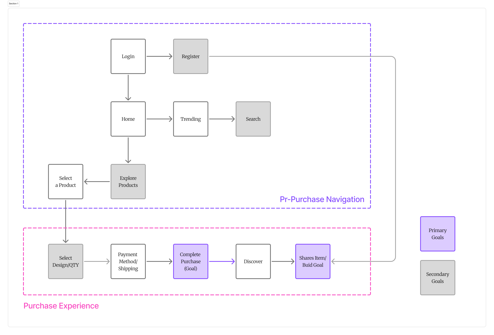
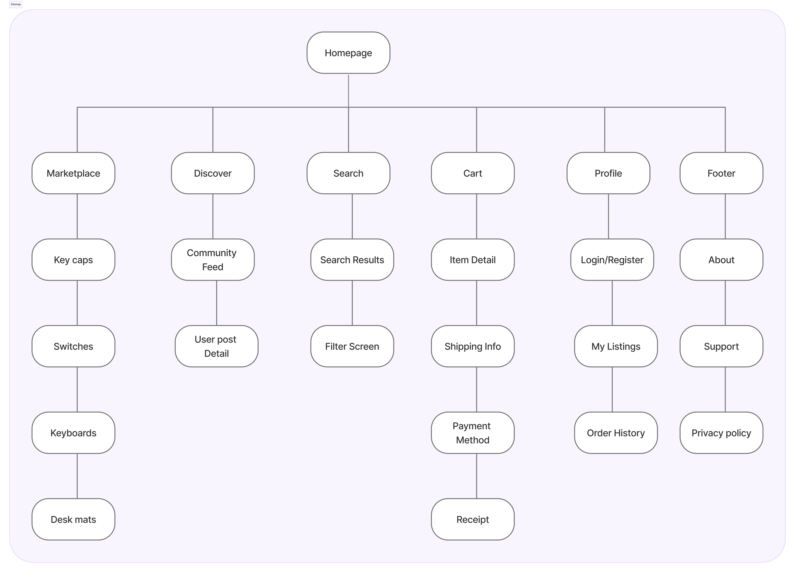

Mechmarket

Project Overview
Mechmarket is a premium community marketplace dedicated to mechanical keyboard enthusiasts. Designed to simplify keyboard building, discovery, and secure trading, it bridges the gap between fragmented Reddit/Discord communities and a unified mobile commerce platform.
Project Vision
Mechmarket is an international shopping app for keyboard enthusiasts alike. For this project, I decided to use a goal-directed design method which revolves around focusing on my persona creation and goals. We prioritized a mobile-first MVP over a desktop web experience because 74% of community marketplace transaction checks occur on-the-go via mobile notifications (e.g., Discord/Reddit pings).
Challenges
- Eliminate barrier to entry on application startup
- Design a cohesive interface for familiar and unfamiliar users
- Create a minimalistic UI while keeping products as the focus
- Provide a seamless & linear purchasing experience
Challenges
- Eliminate barrier to entry on application startup
- Design a cohesive interface for familiar and unfamiliar users
- Create a minimalistic UI while keeping products as the focus
- Provide a seamless & linear purchasing experience
1. Kickoff
I wanted to build a simple mobile marketplace that balances the business goals of sellers with the practical needs of buyers. To guide my design, I started with user research, competitive analysis, and stakeholder interviews, beginning with a few key questions:
What is the product and who is it for?
What do my primary users need most?
Which users are the most important to the business?
What challenges could I face moving forward?
Who do I see as my biggest competitors?
What literature should I review to familiarize myself?
Competitive Analysis
Existing enthusiast trading happens via legacy community frameworks (Reddit r/mechmarket and Discord channels). While these platforms hold deep institutional trust, they possess zero e-commerce infrastructure—forcing users into high-friction manual steps: reading unformatted text posts, negotiating pricing via chaotic DMs, and using unlinked external payment apps (PayPal Goods & Services). This creates a massive Transaction Security Gap and an Information Architecture Gap that our mobile app directly addresses by introducing automated listing verification and localized checkout loops.
The majority of features across competitors were similar; however, I identified the following key differentiators:
Accessibility
Easily Accessible vs. Hardly Accessible
Flow Efficiency
Too Many Screens vs. Simplified Interaction
Visual Aesthetic
Bright/Distracting Interface vs. Minimalistic Interface
Product Focus
Specialization of Products
Key Differentiators
The majority of features across competitors were similar; however, I identified the following key differentiators:
- Easily Accessible vs. Hardly Accessible
- Too Many Screens vs. Simplified Interaction
- Bright/Distracting Interface vs. Minimalistic Interface
- Specialization of Products
2. User Research & Synthesis
I grouped the feedback from my user and subject-matter expert interviews into an affinity map. Categorizing these insights helped me organize user pain points around efficiency, security, and process clarity. Balancing the distinct needs of buyers and sellers allowed me to align user goals with key business outcomes.
Module A: Affinity Map
Module B: Possible Solution Iterations
Meet the Users
Leo
Leo loves when customers ask about his keyboard because he gets to share his unique build. Mechmarket allows him to express his creativity through the app, share with other enthusiasts, and find niche parts and exclusive deals.
Sofia
Sofia is a university student who enjoys solving complex problems through design. She wants her workstation to reflect her aesthetic values, providing functionality that won't distract her from her intensive school work.
Marcus
When Marcus isn't at work, he is first a family man. He loves spending time with his children and needs a seamless way to purchase keyboard parts they have been wanting without getting lost in an overly complex purchasing flow.
Preparing the Journey
I constructed a user flow of what a basic start to finish journey looks like while purchasing an item. This helps me in understanding ways users can interact with the product, as well as allowing me to see navigation through user goals.

3. App Structure & Sitemap
To map out how the app fits together, I built a simple sitemap showing how users navigate between browsing, listing items, and messaging.

Wireflow
I sketched out initial layouts and user paths to refine the steps. Spending time here let me test the main user flow and make sure the layout felt natural before working on visual styling.

4. Testing & Sketches
I tested the initial layout with 16 participants using a 16-question survey. Their feedback showed me exactly where users got confused and helped me refine the main screens:
Trust Indicators
Users expressed security concerns when purchasing high-value items. I identified a need for visible 'certified seller' badges to build user trust.
Checkout Friction
In custom keyboard commerce, items are typically split into two states: factory new (group buys) and aftermarket pre-owned units. Our initial low-fidelity prototype split these into two completely separate navigational paths, doubling the user's search time. In the high-fidelity iteration, I engineered a consolidated Product Detail Page layout. We brought both purchasing categories into a unified component block with a distinct toggle indicator, reducing the time-to-cart path down to a single interaction.
Navigational Ambiguity
The visual similarity between the 'Home' and 'Trending' screens caused user confusion. I redesigned the layouts to ensure clear screen differentiation.
Interaction Design
I moved away from standard dropdown menus, opting for more efficient, modern interaction patterns to keep the buying process quick and simple.
5. Visual Design & Details
Using the feedback from testing, I designed the final high-fidelity screens to make browsing and purchasing simple and clear.
Module A: Home Screen Navigation
I replaced the search-dominant header with a clear 'New vs. Trending' tab system. This eliminated the navigational ambiguity that caused users to lose their place on the screen.
Module B: Product Detail Page (PDP)
I added a product image gallery and a 'Sold by' verification badge to build user trust. I also redesigned the purchase footer, consolidating 'Buy New' and 'Buy Used' into a single, high-contrast action bar to streamline the purchasing flow.
Design Challenges & Solutions
Challenge 1: Eliminating Barriers
A key factor when trying to gain a userbase is to create a splash screen void of conflict. If the user wishes to browse the items within the app before creating an account, they might be more inclined to create one later on. Along with the login and register options, the 'continue as guest' option allows users to browse the app without an account.

Challenge 2: A Familiar Experience
While Mechmarket’s primary audience consists of keyboard enthusiasts, the app must remain accessible to users outside this arena. By utilizing recognizable iconography, intuitive gestures, and a linear purchase process, I ensured that Mechmarket offers an intuitive experience for every user.

Challenge 3: Staying Focused
The UI utilizes a neutral, two-toned black and white color scheme, with green accents used exclusively for key signifiers. By using color sparingly, the interface remains calm, ensuring the product imagery remains the clear focus during user engagement.

Challenge 4: Quick, Simple, & Secure
By consolidating payment and shipping details into a single screen, I eliminated user doubt during the final purchase stage. This design choice minimizes screen count and facilitates a faster, more secure checkout experience.

Design System
To maintain visual consistency and support a unified brand experience, I developed a comprehensive Design System. This sticker sheet establishes my core color palette (Light Lavender, Dark Charcoal, Purple Accent, Blush/Pink), typography scale (SF Pro Rounded hierarchy), pill-shaped components, interactive category filters, standardized keyboard product listing cards, and bottom navigation/header iconography sets.

Inclusive Design & Accessibility
To support all keyboard builders, I designed large touch targets for customization controls and ensured the text contrast was high enough to be readable for everyone.
App Showcase
Explore the Mechmarket mobile application experience through my high-fidelity mockups. This carousel shows the full user experience, from browsing keyboard parts to the final checkout.

Takeaways
As a mechanical keyboard enthusiast, Mechmarket is a project that is incredibly near and dear to my heart. I wanted to communicate the importance of expressing oneself through different creative outlets. This project marked my first time fully utilizing a goal-directed design process, and I can clearly see its immense value for future work.
Honing in on persona hypothesis creation to balance the goals of both the user and the business is a step I had previously taken for granted. Ultimately, I learned that designing exclusively for business metrics without prioritizing user needs leads to failure—a reality that is especially true for modern e-commerce applications.
Next Steps
- Build-Sharing Feature: Explore a build-sharing feature so users can showcase completed keyboard builds to the community, not just buy/sell parts.
- Material 3 Testing: Test the Material 3 visual update with returning users to see if it holds up against the previous design system.
Next Steps
- Build-Sharing Feature: Explore a build-sharing feature so users can showcase completed keyboard builds to the community, not just buy/sell parts.
- Material 3 Testing: Test the Material 3 visual update with returning users to see if it holds up against the previous design system.